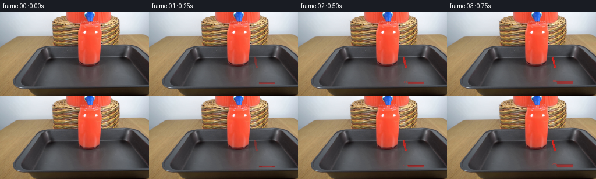
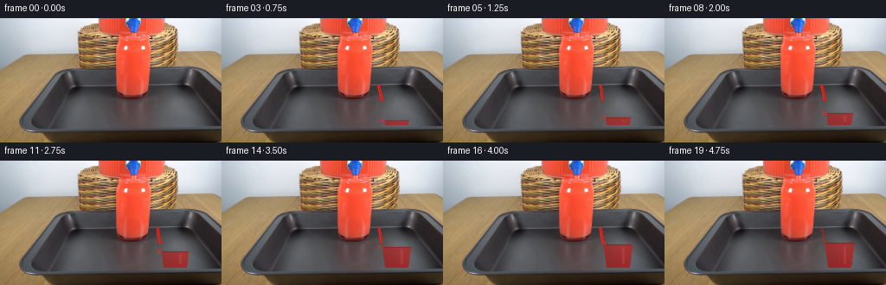

CODING AGENTS AS PIXEL WORLD MODELS
traex/GPT-5.6-Sol · 0089
点击播放 · 原生 RGB 像素
逐轮保存的候选
回放视频、检查图与代码变化。
每份候选均可单独播放。实际图片检查记录在下方工具轨迹中。
候选 01播放与检查图
点击播放 · 原生 RGB 像素


展开代码变化
--- 上一保存版本
+++ 本次保存版本
@@ -0,0 +1,85 @@
+from pathlib import Path
+import numpy as np
+import cv2
+from PIL import Image
+from artifact_io import save
+
+ROOT = Path(__file__).resolve().parent
+BASE = np.asarray(Image.open(ROOT/'first_frame.png').convert('RGB'), dtype=np.uint8)
+H,W = BASE.shape[:2]
+YY,XX = np.mgrid[:H,:W]
+
+# Scene geometry inferred from the supplied frame: dispenser liquid occupies x=134..172,
+# its tap/spout is to the right, and the receiving tumbler is centered near x=202.
+# Only the changing liquid is synthesized; the locked-off photographed scene stays intact.
+def alpha_over(im, color, alpha):
+ a=np.clip(alpha,0,1)[...,None]
+ return np.clip(im.astype(np.float32)*(1-a)+np.asarray(color,np.float32)*a,0,255).astype(np.uint8)
+
+def soft_mask(mask, sigma=.7):
+ return cv2.GaussianBlur(mask.astype(np.float32),(0,0),sigmaX=sigma,sigmaY=sigma)
+
+def frame_at(k):
+ if k==0: return BASE.copy()
+ im=BASE.copy()
+ # Valve opens rapidly after the initial instant. The coherent stream starts beneath
+ # the existing spigot at (181,76), arcs slightly right, and enters the glass at y~91.
+ flow=np.clip((k-0.35)/2.0,0,1)
+ shut=np.clip((19.7-k)/2.2,0,1)
+ strength=flow*shut
+ # Red liquid accumulating in the transparent glass. Approximate visible inner bowl
+ # (elliptical tumbler, narrowing gently toward its bottom at y=123).
+ level=123.0-min(k,17)/17.0*28.0
+ half=np.maximum(10.5, 17.7-0.125*(YY-91))
+ inside=(YY>=level)&(YY<=123)&(np.abs(XX-202)<=half)
+ # meniscus-aware ruby liquid, with dark lower absorption and inherited glass texture
+ depth=np.clip((YY-level)/31,0,1)
+ col=np.zeros_like(im,dtype=np.float32)
+ col[...,0]=178-25*depth; col[...,1]=31-8*depth; col[...,2]=29-5*depth
+ # lighting from right and a muted vertical glass highlight
+ col[...,0]+=15*np.clip((XX-194)/22,0,1)
+ liquid_a=soft_mask(inside,.48)*(.67+.13*depth)
+ im=alpha_over(im,col,liquid_a)
+ # Dark saturated curved meniscus and a narrow specular glint.
+ men=((np.abs((YY-level)-0.10*((XX-202)/17)**2)<0.62)&(np.abs(XX-202)<half))
+ im=alpha_over(im,(125,18,20),soft_mask(men,.45)*.48)
+ glint=inside&(XX>=207)&(XX<=209)&(YY>level+3)&(YY<120)
+ im=alpha_over(im,(241,100,79),soft_mask(glint,.45)*.22)
+
+ # Main falling stream, slightly sinuous and bright-edged. Hide its part already under
+ # the rising liquid surface. Real-time oscillation is subpixel and deterministic.
+ end=min(level+1,95.0)
+ active=(YY>=77)&(YY<=end)
+ center=181.5 + .17*(YY-77) + .28*np.sin(k*1.31+(YY-77)*.30)
+ radius=1.75 + .18*np.sin(k*.83)
+ d=np.abs(XX-center)
+ stream=active & (d<=radius)
+ # darker center, translucent antialiased border, highlight on left
+ sa=soft_mask(stream,.42)*strength*.92
+ scol=np.zeros_like(im,dtype=np.float32)
+ scol[...,0]=218; scol[...,1]=35; scol[...,2]=32
+ scol[...,0]+=21*np.exp(-((XX-(center-.75))/.55)**2)
+ scol[...,1]+=13*np.exp(-((XX-(center-.75))/.55)**2)
+ im=alpha_over(im,scol,sa)
+ core=active&(d<.55)
+ im=alpha_over(im,(153,17,22),soft_mask(core,.34)*strength*.34)
+
+ # Compact impact crown/ripples where stream meets the surface; restrained to preserve realism.
+ if strength>.15 and level<121:
+ iy=int(round(level))
+ phase=k*.9
+ ring=np.abs(np.sqrt(((XX-184.3)/1.45)**2+((YY-iy)/.58)**2)-(2.0+.25*np.sin(phase)))<.48
+ ring &= (np.abs(XX-184)<8)&(np.abs(YY-iy)<3)
+ im=alpha_over(im,(230,53,44),soft_mask(ring,.45)*strength*.45)
+ # one or two tiny upward droplets during established flow
+ if 4<=k<=15:
+ for j in range(2):
+ dx=(-1 if j==0 else 1)*(2.3+j*.8)
+ cy=iy-2.1-(1.1 if ((k+j)%4==0) else 0)
+ drop=((XX-(184+dx))**2/(.75**2)+(YY-cy)**2/(1.05**2))<1
+ im=alpha_over(im,(225,48,38),soft_mask(drop,.38)*strength*.64)
+ return im
+
+frames=np.stack([frame_at(i) for i in range(20)]).astype(np.uint8)
+assert np.array_equal(frames[0],BASE)
+save(frames, ROOT)
候选 02播放与检查图
点击播放 · 原生 RGB 像素

展开代码变化
--- 上一保存版本
+++ 本次保存版本
@@ -10,7 +10,8 @@
YY,XX = np.mgrid[:H,:W]
# Scene geometry inferred from the supplied frame: dispenser liquid occupies x=134..172,
-# its tap/spout is to the right, and the receiving tumbler is centered near x=202.
+# while its tap projects left to x=99 (the horizontal nozzle terminates at y=58).
+# The receiving tumbler's visible top rim is the line around x=85..109, y=79.
# Only the changing liquid is synthesized; the locked-off photographed scene stays intact.
def alpha_over(im, color, alpha):
a=np.clip(alpha,0,1)[...,None]
@@ -23,34 +24,36 @@
if k==0: return BASE.copy()
im=BASE.copy()
# Valve opens rapidly after the initial instant. The coherent stream starts beneath
- # the existing spigot at (181,76), arcs slightly right, and enters the glass at y~91.
+ # the existing left-facing spigot at (99,59) and enters the glass at y~79.
flow=np.clip((k-0.35)/2.0,0,1)
shut=np.clip((19.7-k)/2.2,0,1)
strength=flow*shut
# Red liquid accumulating in the transparent glass. Approximate visible inner bowl
# (elliptical tumbler, narrowing gently toward its bottom at y=123).
- level=123.0-min(k,17)/17.0*28.0
- half=np.maximum(10.5, 17.7-0.125*(YY-91))
- inside=(YY>=level)&(YY<=123)&(np.abs(XX-202)<=half)
+ level=122.0-min(k,19)/19.0*35.0
+ # Perspective trapezoid: a 25 px inner mouth, gently narrowing toward the base.
+ half=np.maximum(8.6, 12.5-0.09*(YY-80))
+ glass_center=99.0+0.018*(YY-80)
+ inside=(YY>=level)&(YY<=124)&(np.abs(XX-glass_center)<=half)
# meniscus-aware ruby liquid, with dark lower absorption and inherited glass texture
depth=np.clip((YY-level)/31,0,1)
col=np.zeros_like(im,dtype=np.float32)
col[...,0]=178-25*depth; col[...,1]=31-8*depth; col[...,2]=29-5*depth
# lighting from right and a muted vertical glass highlight
- col[...,0]+=15*np.clip((XX-194)/22,0,1)
+ col[...,0]+=15*np.clip((XX-94)/18,0,1)
liquid_a=soft_mask(inside,.48)*(.67+.13*depth)
im=alpha_over(im,col,liquid_a)
# Dark saturated curved meniscus and a narrow specular glint.
- men=((np.abs((YY-level)-0.10*((XX-202)/17)**2)<0.62)&(np.abs(XX-202)<half))
+ men=((np.abs((YY-level)-0.10*((XX-99)/12)**2)<0.62)&(np.abs(XX-glass_center)<half))
im=alpha_over(im,(125,18,20),soft_mask(men,.45)*.48)
- glint=inside&(XX>=207)&(XX<=209)&(YY>level+3)&(YY<120)
+ glint=inside&(XX>=104)&(XX<=105)&(YY>level+3)&(YY<121)
im=alpha_over(im,(241,100,79),soft_mask(glint,.45)*.22)
# Main falling stream, slightly sinuous and bright-edged. Hide its part already under
# the rising liquid surface. Real-time oscillation is subpixel and deterministic.
- end=min(level+1,95.0)
- active=(YY>=77)&(YY<=end)
- center=181.5 + .17*(YY-77) + .28*np.sin(k*1.31+(YY-77)*.30)
+ end=min(level+1,80.0)
+ active=(YY>=59)&(YY<=end)
+ center=99.0 + .025*(YY-59) + .25*np.sin(k*1.31+(YY-59)*.30)
radius=1.75 + .18*np.sin(k*.83)
d=np.abs(XX-center)
stream=active & (d<=radius)
@@ -68,15 +71,15 @@
if strength>.15 and level<121:
iy=int(round(level))
phase=k*.9
- ring=np.abs(np.sqrt(((XX-184.3)/1.45)**2+((YY-iy)/.58)**2)-(2.0+.25*np.sin(phase)))<.48
- ring &= (np.abs(XX-184)<8)&(np.abs(YY-iy)<3)
+ ring=np.abs(np.sqrt(((XX-99.5)/1.45)**2+((YY-iy)/.58)**2)-(2.0+.25*np.sin(phase)))<.48
+ ring &= (np.abs(XX-99.5)<8)&(np.abs(YY-iy)<3)
im=alpha_over(im,(230,53,44),soft_mask(ring,.45)*strength*.45)
# one or two tiny upward droplets during established flow
if 4<=k<=15:
for j in range(2):
dx=(-1 if j==0 else 1)*(2.3+j*.8)
cy=iy-2.1-(1.1 if ((k+j)%4==0) else 0)
- drop=((XX-(184+dx))**2/(.75**2)+(YY-cy)**2/(1.05**2))<1
+ drop=((XX-(99.5+dx))**2/(.75**2)+(YY-cy)**2/(1.05**2))<1
im=alpha_over(im,(225,48,38),soft_mask(drop,.38)*strength*.64)
return im
候选 03播放与检查图
可观测工具轨迹
实际执行的命令与返回图片。
命令 1exit 0
/bin/bash -lc "cat GENERATION_RULES.md && printf '\\n---PROMPT---\\n' && cat prompt.txt"
命令 2exit 1
/bin/bash -lc "find . -maxdepth 2 -type f -printf '%p\\n' | sort && printf '\\n--- tools ---\\n' && command -v ffmpeg && command -v python3"
命令 3exit 0
/bin/bash -lc "python3 - <<'PY'
from PIL import Image
import numpy as np
im=np.array(Image.open('first_frame.png').convert('RGB'))
print(im.shape, im.dtype, im.min((0,1)), im.max((0,1)), im.mean((0,1)))
# top colors quantized 16
q=(im//16)*16
u,c=np.unique(q.reshape(-1,3),axis=0,return_counts=True)
for i in np.argsort(c)[-30:][::-1]: print(c[i],u[i])
PY"命令 4exit 0
/bin/bash -lc "python3 - <<'PY'
import cv2, numpy as np
from PIL import Image
im=np.array(Image.open('first_frame.png').convert('RGB'))
print('cv',cv2.__version__)
# ascii 64x36 based categories: red dominance, bright, dark, warm wood, neutral
sm=cv2.resize(im,(64,36),interpolation=cv2.INTER_AREA)
chars=[]
for row in sm:
s=''
for r,g,b in row:
if r>g*1.5 and r>b*1.5 and r>100: c='R'
elif max(r,g,b)<55: c='#'
elif max(r,g,b)<95: c='x'
elif min(r,g,b)>190: c='.'
elif abs(int(r)-int(g))<18 and abs(int(g)-int(b))<18: c='o'
elif r>g*1.15 and g>b*1.15: c='w'
else:c=' '
s+=c
chars.append(s)
print('\\n'.join(chars))
# red mask components
r,g,b=im[:,:,0],im[:,:,1],im[:,:,2]
m=(r.astype(int)>g.astype(int)*1.3)&(r.astype(int)>b.astype(int)*1.25)&(r>110)
n,lab,st,cen=cv2.connectedComponentsWithStats(m.astype('uint8'))
print('components red')
for i in np.argsort(st[1:,4])[-20:][::-1]+1: print(i, st[i].tolist(),cen[i].tolist())
PY"命令 5exit 0
/bin/bash -lc "cat > .tmp/analyze.py <<'PY'
import cv2,numpy as np
from PIL import Image
im=np.array(Image.open('first_frame.png').convert('RGB'))
# k means Lab 14
lab=cv2.cvtColor(im,cv2.COLOR_RGB2LAB).reshape(-1,3).astype(np.float32)
_,labs,c=cv2.kmeans(lab,14,None,(cv2.TERM_CRITERIA_EPS+cv2.TERM_CRITERIA_MAX_ITER,30,.2),10,cv2.KMEANS_PP_CENTERS)
c_rgb=cv2.cvtColor(c.astype('uint8')[None],cv2.COLOR_LAB2RGB)[0]
# reorder chars based on brightness / values
order=np.argsort(c_rgb.mean(1)); chars='@%#*+=-:.abcde'
mp={int(idx):chars[j] for j,idx in enumerate(order)}
print('centers lab/rgb mapping')
for idx in order: print(mp[int(idx)], idx, c_rgb[idx])
L=labs.reshape(144,256)
for yy in range(0,144,2):
print(f'{yy:03}', ''.join(mp[int(np.bincount(L[yy:yy+2,x:x+2].ravel(),minlength=14).argmax())] for x in range(0,256,2)))
PY
python3 .tmp/analyze.py"命令 6exit 0
/bin/bash -lc "python3 - <<'PY'
from PIL import Image
import numpy as np, cv2
im=np.array(Image.open('first_frame.png').convert('RGB'))
r,g,b=im.transpose(2,0,1)
# print red runs each row threshold
for y in range(0,144,4):
m=(r[y]>g[y]*1.25)&(r[y]>b[y]*1.2)&(r[y]>100)
runs=[];on=None
for x,v in enumerate(np.r_[m,False]):
if v and on is None:on=x
if not v and on is not None:
if x-on>=2:runs.append((on,x-1))
on=None
print(y,runs)
# edges contours bbox and color stats per regional grid around x80-210
print('corners')
gray=cv2.cvtColor(im,cv2.COLOR_RGB2GRAY); ed=cv2.Canny(gray,60,130)
contours,_=cv2.findContours(ed,cv2.RETR_LIST,cv2.CHAIN_APPROX_SIMPLE)
for c in sorted(contours,key=cv2.contourArea,reverse=True)[:25]:
print(round(cv2.contourArea(c),1),cv2.boundingRect(c))
PY"命令 7exit 0
/bin/bash -lc "python3 - <<'PY'
import cv2, numpy as np
from PIL import Image
im=np.array(Image.open('first_frame.png').convert('RGB')); gr=cv2.cvtColor(im,cv2.COLOR_RGB2GRAY)
ed=cv2.Canny(gr,35,100)
lines=cv2.HoughLinesP(ed,1,np.pi/180,threshold=15,minLineLength=10,maxLineGap=3)
for z in sorted(lines[:,0].tolist(),key=lambda z:-(z[2]-z[0])**2-(z[3]-z[1])**2)[:80]:print(z)
PY"命令 8exit 0
/bin/bash -lc "python3 - <<'PY'
import cv2,numpy as np
from PIL import Image
im=np.array(Image.open('first_frame.png').convert('RGB'))
# HSV category custom crop, every pixel
for y in range(68,133,2):
s=''
for x in range(90,221,2):
p=im[y:y+2,x:x+2].mean((0,1));r,g,b=p; v=max(p); mi=min(p)
if r>g*1.3 and r>b*1.3 and r>120:c='R'
elif v<40:c='@'
elif v<65:c='#'
elif v<90:c='X'
elif v<115:c='x'
elif v<145:c='+'
elif v<175:c='-'
elif v<205:c='.'
else:c=' '
s+=c
print(f'{y:03} {s}')
PY"命令 9exit 0
/bin/bash -lc "python3 - <<'PY'
from PIL import Image
import numpy as np
im=np.array(Image.open('first_frame.png').convert('RGB'))
for y in range(0,136,8):
print('\\ny',y)
for x in range(0,256,8):
a=im[y:y+8,x:x+8].mean((0,1)).astype(int)
print('%02x%02x%02x'%tuple(a),end=' ')
print()
PY"命令 10exit 0
/bin/bash -lc "python3 - <<'PY'
import cv2, numpy as np
from PIL import Image
im=np.array(Image.open('first_frame.png').convert('RGB'))
g=cv2.cvtColor(im,cv2.COLOR_RGB2GRAY).astype(float)
for yr in [(86,130),(90,128),(92,126),(56,130)]:
e=np.abs(np.diff(g[yr[0]:yr[1]],axis=1)).sum(0)
print(yr, sorted(enumerate(e),key=lambda z:z[1],reverse=True)[:30])
# horizontal diff sums columns 90-220
for xr in [(90,220),(120,190),(130,180),(170,220)]:
e=np.abs(np.diff(g[:,xr[0]:xr[1]],axis=0)).sum(1)
print(xr, sorted(enumerate(e),key=lambda z:z[1],reverse=True)[:20])
PY"命令 11exit 0
/bin/bash -lc "python3 - <<'PY'
import cv2,numpy as np
im=cv2.imread('first_frame.png'); g=cv2.cvtColor(im,cv2.COLOR_BGR2GRAY)
e=cv2.Canny(g,25,70)
# dilated and print 2x2 occupancy
for y in range(0,144,2):
print(f'{y:03} '+''.join('â' if e[y:y+2,x:x+2].max() else ' ' for x in range(0,256,2)))
PY"命令 12exit 0
/bin/bash -lc 'cat artifact_io.py'
命令 13exit 0
/bin/bash -lc "python3 - <<'PY'
from PIL import Image
import numpy as np
im=np.array(Image.open('first_frame.png').convert('RGB'))
for y in range(44,101,2):
s=''
for x in range(164,233,2):
p=im[y:y+2,x:x+2].mean((0,1));r,g,b=p
if r>g*1.35 and r>b*1.3 and r>120:c='R'
elif max(p)<40:c='@'
elif max(p)<60:c='#'
elif max(p)<85:c='X'
elif max(p)<115:c='x'
elif max(p)<150:c='+'
elif max(p)<190:c='-'
elif min(p)>195:c=' '
else:c='.'
s+=c
print(f'{y:03} {s}')
PY"命令 14exit 0
/bin/bash -lc "cat > generate.py <<'PY'
from pathlib import Path
import numpy as np
import cv2
from PIL import Image
from artifact_io import save
ROOT = Path(__file__).resolve().parent
BASE = np.asarray(Image.open(ROOT/'first_frame.png').convert('RGB'), dtype=np.uint8)
H,W = BASE.shape[:2]
YY,XX = np.mgrid[:H,:W]
# Scene geometry inferred from the supplied frame: dispenser liquid occupies x=134..172,
# its tap/spout is to the right, and the receiving tumbler is centered near x=202.
# Only the changing liquid is synthesized; the locked-off photographed scene stays intact.
def alpha_over(im, color, alpha):
a=np.clip(alpha,0,1)[...,None]
return np.clip(im.astype(np.float32)*(1-a)+np.asarray(color,np.float32)*a,0,255).astype(np.uint8)
def soft_mask(mask, sigma=.7):
return cv2.GaussianBlur(mask.astype(np.float32),(0,0),sigmaX=sigma,sigmaY=sigma)
def frame_at(k):
if k==0: return BASE.copy()
im=BASE.copy()
# Valve opens rapidly after the initial instant. The coherent stream starts beneath
# the existing spigot at (181,76), arcs slightly right, and enters the glass at y~91.
flow=np.clip((k-0.35)/2.0,0,1)
shut=np.clip((19.7-k)/2.2,0,1)
strength=flow*shut
# Red liquid accumulating in the transparent glass. Approximate visible inner bowl
# (elliptical tumbler, narrowing gently toward its bottom at y=123).
level=123.0-min(k,17)/17.0*28.0
half=np.maximum(10.5, 17.7-0.125*(YY-91))
inside=(YY>=level)&(YY<=123)&(np.abs(XX-202)<=half)
# meniscus-aware ruby liquid, with dark lower absorption and inherited glass texture
depth=np.clip((YY-level)/31,0,1)
col=np.zeros_like(im,dtype=np.float32)
col[...,0]=178-25*depth; col[...,1]=31-8*depth; col[...,2]=29-5*depth
# lighting from right and a muted vertical glass highlight
col[...,0]+=15*np.clip((XX-194)/22,0,1)
liquid_a=soft_mask(inside,.48)*(.67+.13*depth)
im=alpha_over(im,col,liquid_a)
# Dark saturated curved meniscus and a narrow specular glint.
men=((np.abs((YY-level)-0.10*((XX-202)/17)**2)<0.62)&(np.abs(XX-202)<half))
im=alpha_over(im,(125,18,20),soft_mask(men,.45)*.48)
glint=inside&(XX>=207)&(XX<=209)&(YY>level+3)&(YY<120)
im=alpha_over(im,(241,100,79),soft_mask(glint,.45)*.22)
# Main falling stream, slightly sinuous and bright-edged. Hide its part already under
# the rising liquid surface. Real-time oscillation is subpixel and deterministic.
end=min(level+1,95.0)
active=(YY>=77)&(YY<=end)
center=181.5 + .17*(YY-77) + .28*np.sin(k*1.31+(YY-77)*.30)
radius=1.75 + .18*np.sin(k*.83)
d=np.abs(XX-center)
stream=active & (d<=radius)
# darker center, translucent antialiased border, highlight on left
sa=soft_mask(stream,.42)*strength*.92
scol=np.zeros_like(im,dtype=np.float32)
scol[...,0]=218; scol[...,1]=35; scol[...,2]=32
scol[...,0]+=21*np.exp(-((XX-(center-.75))/.55)**2)
scol[...,1]+=13*np.exp(-((XX-(center-.75))/.55)**2)
im=alpha_over(im,scol,sa)
core=active&(d<.55)
im=alpha_over(im,(153,17,22),soft_mask(core,.34)*strength*.34)
# Compact impact crown/ripples where stream meets the surface; restrained to preserve realism.
if strength>.15 and level<121:
iy=int(round(level))
phase=k*.9
ring=np.abs(np.sqrt(((XX-184.3)/1.45)**2+((YY-iy)/.58)**2)-(2.0+.25*np.sin(phase)))<.48
ring &= (np.abs(XX-184)<8)&(np.abs(YY-iy)<3)
im=alpha_over(im,(230,53,44),soft_mask(ring,.45)*strength*.45)
# one or two tiny upward droplets during established flow
if 4<=k<=15:
for j in range(2):
dx=(-1 if j==0 else 1)*(2.3+j*.8)
cy=iy-2.1-(1.1 if ((k+j)%4==0) else 0)
drop=((XX-(184+dx))**2/(.75**2)+(YY-cy)**2/(1.05**2))<1
im=alpha_over(im,(225,48,38),soft_mask(drop,.38)*strength*.64)
return im
frames=np.stack([frame_at(i) for i in range(20)]).astype(np.uint8)
assert np.array_equal(frames[0],BASE)
save(frames, ROOT)
PY
python3 generate.py
python3 - <<'PY'
import numpy as np
from PIL import Image
z=np.load('pixels.npz')['pixels']; print(z.shape,z.dtype)
a=np.array(Image.open('first_frame.png').convert('RGB'));b=np.array(Image.open('frames/00.png').convert('RGB')); print('first exact',np.array_equal(a,b))
PY"命令 15exit 0
/bin/bash -lc "python3 - <<'PY'
from PIL import Image
import numpy as np
im=np.array(Image.open('first_frame.png').convert('RGB'))
for y in range(50,91,2):
print(y,end=' ')
for x in range(165,231):
r,g,b=im[y,x]
# compact exact categories
if r>1.35*g and r>1.3*b and r>100:c='R'
elif max(r,g,b)<35:c='@'
elif max(r,g,b)<55:c='#'
elif max(r,g,b)<75:c='X'
elif max(r,g,b)<95:c='x'
elif max(r,g,b)<125:c='+'
elif max(r,g,b)<160:c='-'
elif max(r,g,b)<200:c='.'
else:c=' '
print(c,end='')
print()
PY"命令 16exit 0
/bin/bash -lc "python3 - <<'PY'
import cv2, numpy as np
from PIL import Image
im=np.array(Image.open('first_frame.png').convert('RGB')); g=cv2.cvtColor(im,cv2.COLOR_RGB2GRAY)
e=cv2.Canny(g,35,100)
print(' '+''.join(str(x//10%10) for x in range(165,226)))
print(' '+''.join(str(x%10) for x in range(165,226)))
for y in range(45,90):
print(f'{y:02} '+''.join('#' if e[y,x] else ' ' for x in range(165,226)))
PY"命令 17exit 0
/bin/bash -lc "python3 generate.py && python3 - <<'PY'
from PIL import Image
import numpy as np
ims=[np.array(Image.open(f'frames/{i:02}.png')) for i in range(20)]
for i in [0,1,2,4,8,12,16,19]:
d=np.any(ims[i]"'!=ims[0],2); yy,xx=np.where(d)
print(i, d.sum(), (xx.min(),yy.min(),xx.max(),yy.max()) if len(xx) else None)
print('"'first exact',np.array_equal(ims[0],np.array(Image.open('first_frame.png').convert('RGB'))))
PY"命令 18exit 0
/bin/bash -lc "python3 - <<'PY'
import ast, numpy as np
from PIL import Image
# contract checks
f=np.stack([np.array(Image.open(f'frames/{i:02d}.png').convert('RGB')) for i in range(20)])
assert f.shape==(20,144,256,3) and f.dtype==np.uint8
assert np.array_equal(f[0],np.array(Image.open('first_frame.png').convert('RGB')))
z=np.load('pixels.npz')['pixels']; assert z.shape==(144,256,20)
print('validated',f.shape,f.dtype,'mean abs final delta',np.abs(f[-1].astype(int)-f[0]).mean())
PY
ls -lh generate.py pixels.npz inspection.png index.html | awk '{print "'$5,$9}'"'"保存候选 3 份；完成命令 18 次；可验证图片返回 0 张。原始 API 响应与完整日志保留在本地。